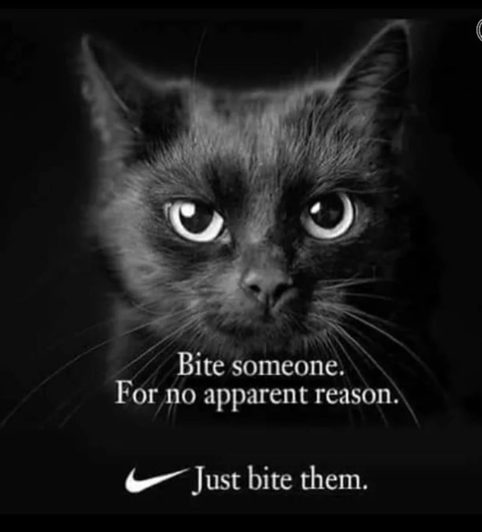

I grew up in Johnstown, Pennsylvania, where I picked up my Pittsburgh accent. I got my bachelor's degree from the University of Pittsburgh at Johnstown, majoring in English Literature with a minor in History. After college, I moved to Maryland, and got my master's degree in Computer Science from Hood College in Frederick, Maryland.
I have provided second-level IT support, as well as administering databases, creating and delivering in-person software training courses, building web pages, tracking down company devices based on their network trail, and getting Excel to show me things from disparate sources.
In my spare time, I like to crochet, knit, quilt, garden, write, play D&D, and enjoy my cats. According to the Myers-Briggs Type Indicator, I'm an INFJ. According to everyone else, I'm a fuzzy thinker.
I also think everyone should have a house panther.
